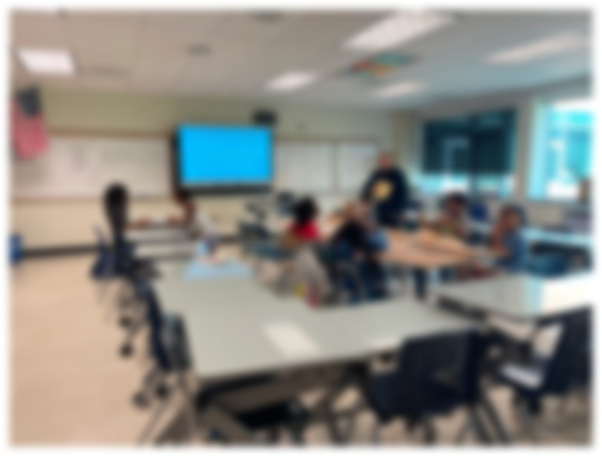
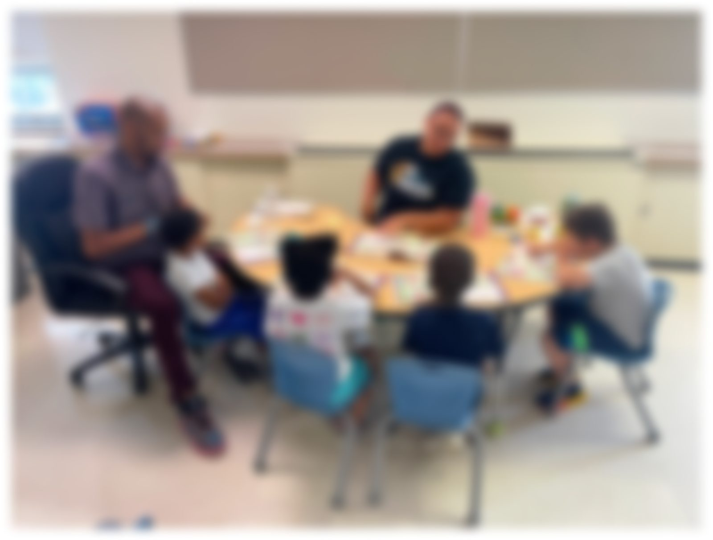
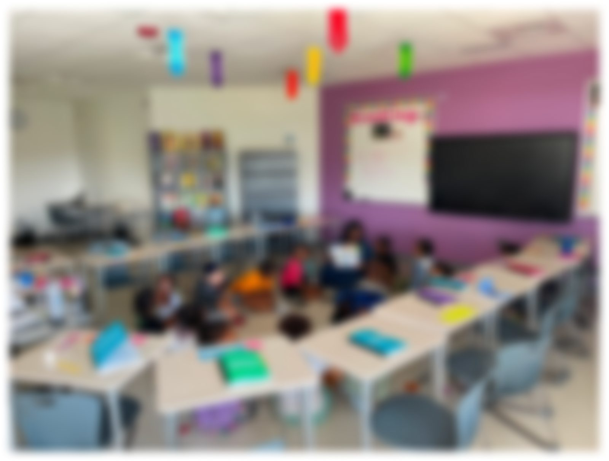
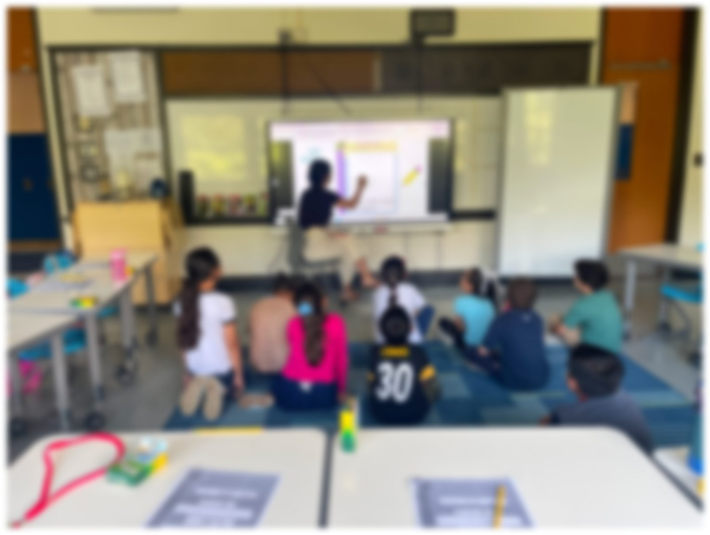
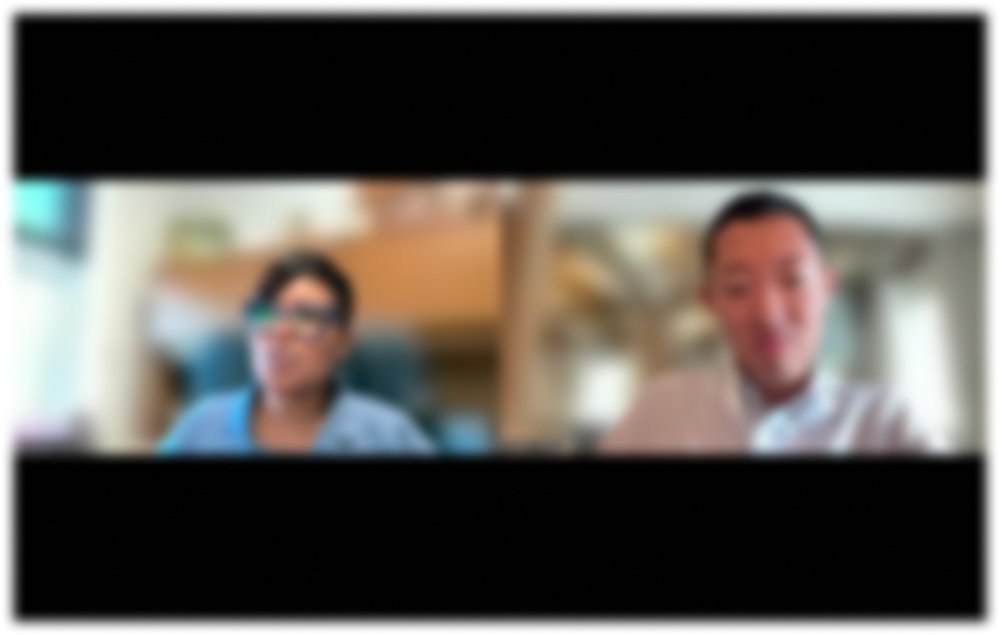
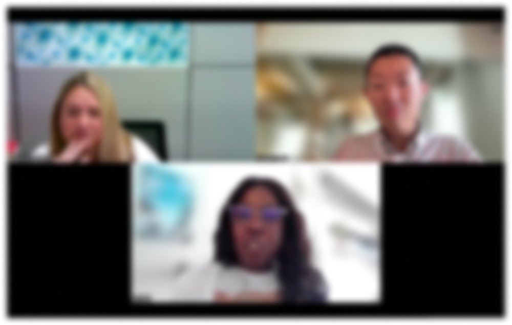
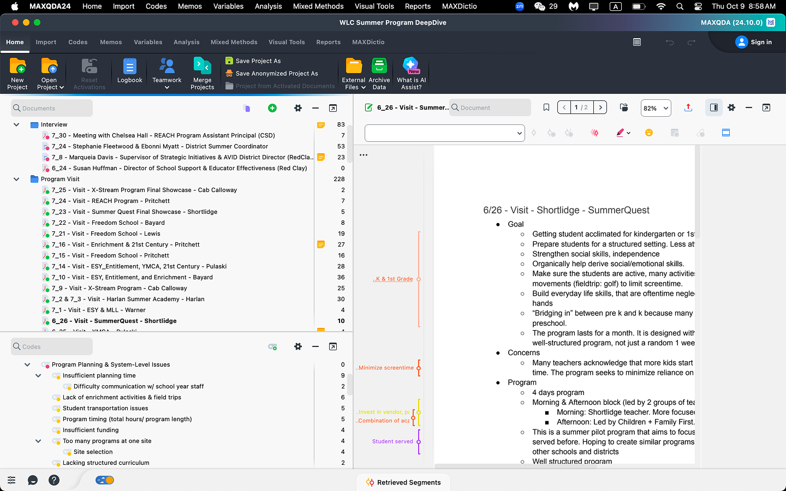
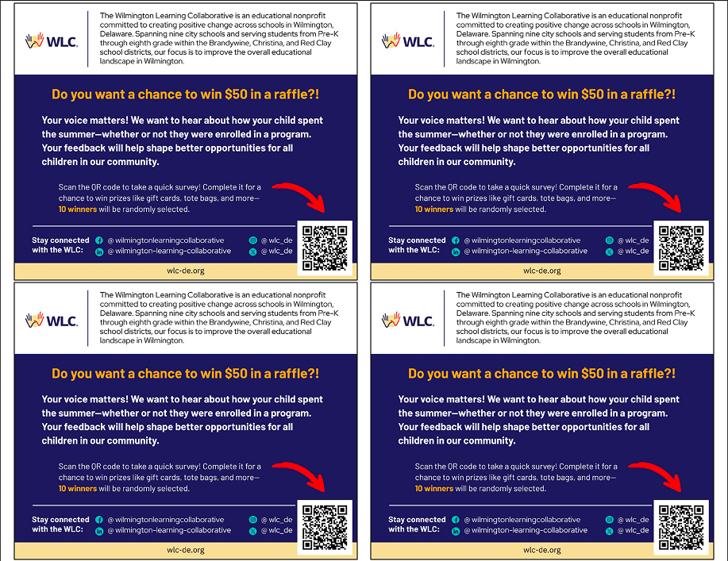
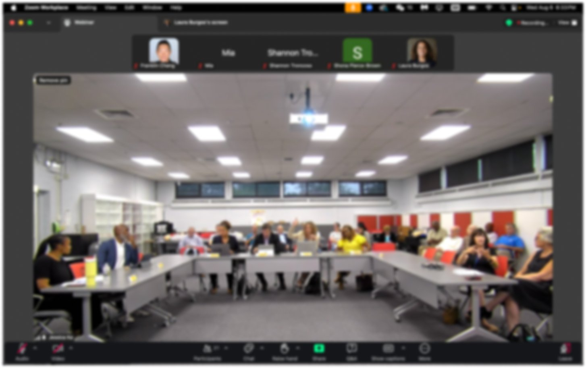

Exploring Summer in WLC Schools: A Landscape Analysis
A 7-week, mixed-methods study of 18 summer learning programs across three Delaware school districts, built to give a $1.5M funding decision a ground-level view it didn't have.
From a landscape analysis to a $1.5M funding framework
This study gave the Collaborative a ground-level view it didn't have of how its 18 summer programs were actually running, and turned into the evaluation framework guiding how the next round of funding gets measured.
18
Summer Programs
Studied 18 summer learning programs across 3 Delaware school districts.
$1.5M
in Funding
Findings now guide $1.5M in summer-learning funding through the KPI & evaluation framework I designed.
194
Survey Responses
194 family survey responses fed directly into the recommendations.
I presented the findings and recommendations directly to Wilmington's mayor, state senators, and education leaders across school districts in Delaware and Pennsylvania. The findings were later featured on Delaware Public Media.
A mixed-methods look from three levels: program, family, and district
The WLC had allocated roughly $1.5M toward summer learning across nine schools with no data-driven view of how programs actually ran on the ground or how families experienced them. Over seven weeks I ran a landscape analysis from three angles: sitting in on programs directly, interviewing the people running and overseeing them, and surveying the families they served.
Field visits & program observation
15 program observations across the nine WLC schools, conducted over one month to see how each program was actually being run day to day, not just how it was planned on paper. Instructors and program coordinators were interviewed informally during each site visit, and every visit was written up as detailed field notes.




Semi-structured interviews
6 interviews conducted via phone or video call with program directors, district leaders, and summer learning coordinators, to collect district-level insight into how summer programs were planned, staffed, and executed across the Brandywine, Christina, and Red Clay districts.


Thematic analysis
Every field note and interview transcript, across the program, family, and district levels, was coded in MAXQDA to surface recurring themes rather than relying on impressions from any single visit or conversation.

Survey recruitment & design
A bilingual (English & Spanish), 13-question survey was distributed to families across the nine WLC schools to gather feedback on their children's summer plans and experiences, closing with 194 responses (n=194). Since survey awareness was itself a known problem (most families found programs through word of mouth, not official channels), recruitment leaned on a flyer distributed through schools, pairing a QR code with a $50 raffle incentive to drive response rate.

Bringing the findings to the people who could act on them
I presented the research findings and recommendations at a council meeting to Wilmington's mayor, local school district leaders, and educators from across Delaware, turning seven weeks of fieldwork into a case for how the Collaborative plans and funds summer learning going forward.

Featured on Delaware Public Media
These findings were covered by Delaware Public Media: "Wilmington Learning Collaborative sees 57% attendance rate for summer programs, aims to expand" ↗